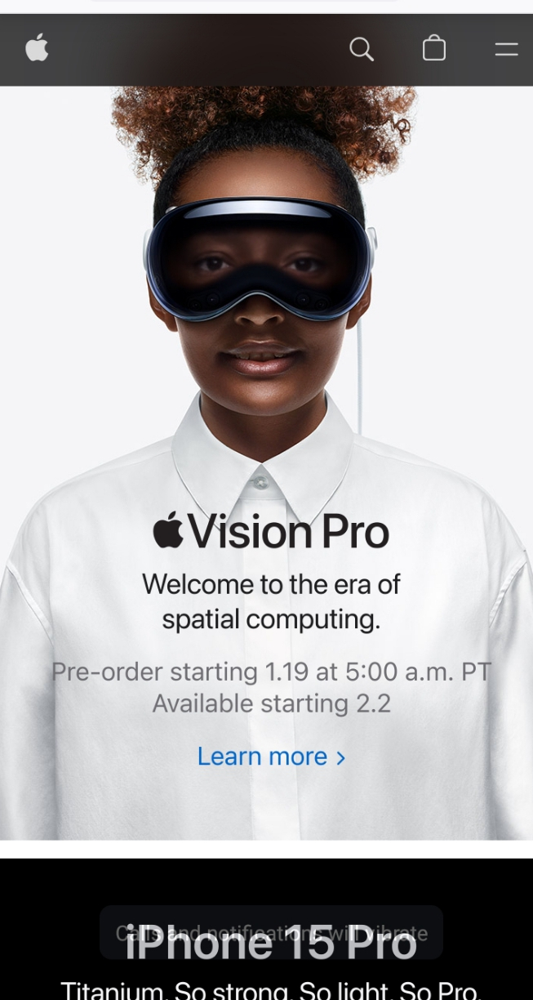

DESIGN PRINCIPLES DOCUMENT
SSEBUDE TITUS
Visual Hierarchy
Apple Inc.

Apple's website is a great example of visual hierarchy. The use of large, bold headings and striking visuals immediately draws the user's attention. The placement of key products and features is strategically organized, guiding the user's focus through the page. This ensures a clear flow of information and helps users navigate the content effortlessly.
Rule of Thirds
National Geographic

National Geographic's mobile site often utilizes the Rule of Thirds in its photography. Images on their pages are often divided into thirds both horizontally and vertically, creating a visually appealing composition. This principle helps draw attention to key focal points within the images, making the content more engaging and aesthetically pleasing.
White Space and Clean Design
Dropbox
Dropbox's mobile design is a great example of clean design with ample white space. The interface is minimalistic, focusing on essential elements. Adequate spacing around buttons and content contributes to a clutter-free experience. This simplicity enhances user comprehension and navigation, making it easy for users to find and interact with their files.